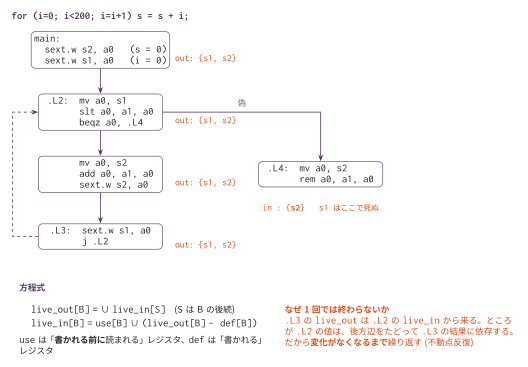

生存変数解析 — 「この値はまだ使われるか」を解く
今日のゴール
「この地点から先で、このレジスタの値がまだ読まれるか」を、 フローグラフ全体にわたって求める。後ろ向きのデータフロー解析を1つ作る。
この回の位置づけ
| 項目 | 内容 |
|---|---|
| 必須の前提 | O1（golden.py が O1_measure/bench/ の5本を対象にする）、O2（フローグラフの上で解く）、O4（割り当て前は解析しても何も出てこない） |
| 推奨の前提 | O3（命令選択） |
| 改変しない | mycc.py、scaffold/、optcc.py |
| 編集する | liveness.py |
| 完了条件 | check.py の全 Step が PASS になり、golden.py が bench/*.c で「割り当て前は空振り、割り当て後に効く」ことを確認する |
| コマ数 | 1 |
| 備考 | 最適化発展シリーズの第5回。この回は命令数を減らさない（解析そのものが成果物で、O6 が使う） |
この回は命令数を減らさない。 解析そのものが成果物で、 O6（コピー伝播と死コード除去）がこの解析を使う。
なぜ O4 の後なのか
O3 の is_dead_after は、ラベルや分岐に出会うと
「ここで基本ブロックが終わる → 判断できない」と答えて畳み込みをあきらめていた。
前向きに1行ずつ見るだけなので、ラベルの先が分からないのである。 フローグラフの上で解けば、ブロックを越えて答えられる。
ただし、O4 を通す前の出力に対しては、解いても何も出てこない。 コマ15 のコード生成は a0/a1 の2本しか使わず、値をすぐスタックへ逃がす。 レジスタの生存区間が数命令しかないので、 ブロックの境界をまたいで生きているレジスタが存在しないのである。
O4 で変数を s1〜s11 に置いて初めて、 「ループの間ずっと生きている値」がレジスタの上に現れる。
解析が何を見つけられるかは、コードの表現の仕方で決まる。 同じ解析でも、表現が変われば結果が変わる。 この回では、それを数字で確かめる。
生きている、とは
あるレジスタが生きている（live）とは、 「その地点より先で、書き換えられる前に読まれる」ことをいう。
li a0, 5 # ここで a0 は死んでいる(この後すぐ上書きされるなら)
li a0, 7
add a1, a0, a0 # ここでは a0 は生きている(直後に読まれる)生きていない値は、計算する必要がない。これが死コード除去の根拠になる。
命令ごとの def と use
まず、命令1つが「何を書き」「何を読む」かを決める。
| 命令 | def（書く） | use（読む） | 注意 |
|---|---|---|---|
add rd, rs1, rs2 |
{rd} |
{rs1, rs2} |
算術一般 |
li rd, N |
{rd} |
{} |
定数は use にならない |
lw rd, N(rs) |
{rd} |
{rs} |
ベースを読む |
sw rs2, N(rs1) |
{} |
{rs2, rs1} |
ストアはレジスタに書かない |
beqz rs, L |
{} |
{rs} |
飛び先ラベルは外す |
call f |
caller-saved すべて | a0〜a7 |
呼び出し規約から決まる |
ret |
{} |
a0, ra, sp, s0 と復帰する callee-saved |
呼び出し元へ返す義務がある |
4つ、間違えやすいところがある。
ストアの def は空である。 sw a0, -24(s0) が書き込む先はメモリであって、
レジスタではない。ここを {a0} にしてしまうと、
まだ使う値を「死んでいる」と判断して消してしまう。
call はレジスタを壊す。 呼ばれた側が自由に使ってよいレジスタ
（a0〜a7, ra, t0〜t6）を全部 def 扱いにする。
「呼び出しの向こう側で何が起きるか分からない」ことを、そのまま表す。
call の use は安全側に倒す。 その関数が引数を何個取るかは、
call f という命令からは分からない。だから a0〜a7 を全部 use にする。
実際より多く見えるが、少なく見積もるより安全である。
ret は「復帰する」callee-saved を読む。 呼び出し元は s0〜s11 と sp が
保たれていることを期待している。つまり関数の出口では、これらが生きている。
これを忘れると、エピローグの復帰が死コードとして消える。
.L1:
ld s1, -40(s0) # s1 は「この先で読まれない」ように見える
ld s0, 32(sp) # → 消される → 呼び出し元の s1 が壊れる
retmain だけのプログラムでは気づきにくい。
strops のように関数を呼ぶプログラムで、呼び出し元のループ変数が壊れて
無限ループになるという形で表面化する。
ただし s1〜s11 を無条件に読むことにしてはいけない。
O4 の save_restore は、昇格した変数の分だけ sd / ld を出す。
一度も触っていない s7 は保存も復帰もされないので、
出口で生きている必要もない —— 保っているのは呼び出し元自身だからである。
そこで、関数ごとに「エピローグで実際に復帰する sN」を集める。
ld sN, ...(s0) を探すだけなので、これは完成済みで渡してある。
restored_saved(blocks) # → {'main': {'s1', 's2'}, 'f': set(), ...}これを def_use(insn, saved) の第2引数に渡し、ret の use に足す。
solve と live_after はブロックの func を見て、
その関数の集合を選んで渡す。
ブロック単位にまとめる
ブロックの中は一本道なので、先頭から順になめれば def と use が決まる。
use … ブロックの中で「書かれる前に」読まれるレジスタ
def … ブロックの中で書かれるレジスタ「書かれる前に」が肝である。
mv a0, s1 # s1 は use
li a0, 5 # a0 に書いてから
add a1, a0, a0 # 読んでいるので、この a0 は use ではない方程式を解く

live_out[B] = ∪ live_in[S] (S は B の後続)
live_in[B] = use[B] ∪ (live_out[B] − def[B])「後続で生きているものは、自分の出口でも生きている」 「入口で生きているのは、自分が読むものと、自分が書き換えずに通す（後で使われる）もの」 と読める。
後ろ向きなのは、live_out が後続から決まるからである。
情報は制御の流れと逆向きに伝わる。
なぜ1回では終わらないか
ループがあると、1周では解けない。
.L3 の live_out は .L2 の live_in から来る
.L2 の live_in は … 後方辺をたどって .L3 の結果に依存しているお互いに依存しているので、変化がなくなるまで繰り返す。 これを不動点反復という。集合は増える一方なので、必ず止まる。
実装
| Step | 実装対象 | 内容 |
|---|---|---|
| 1 | def_use |
上の表（saved は ret の use に足す） |
| 2 | block_def_use / solve |
方程式を不動点まで解く |
| 3 | live_after |
命令単位に展開（O6 が使う） |
| 4 | live_across_calls |
呼び出しをまたいで生きるレジスタ |
呼び出し規約の定数・restored_saved・可視化（annotate）は完成済みである。
コラム: 安全側に倒しすぎると、解析は何も言わなくなる。
「ret は s1〜s11 を全部読む」としても、答えは安全ではある。
生きているものを死んでいると言わないので、間違ったコードは生まれない。
しかしこの粗い仮定を入れると、一度も定義されない sN は
ret の use から関数の入口まで遡り、全ブロックで生きていることになる。
実際にこの教材の初版はそうなっていて、平均生存本数はどのベンチマークでも
9〜10 本に張りついた。割り当ての前後の差は完全に埋もれ、
それどころか「割り当て後のほうが少ない」という逆転まで起きた
（復帰した数本だけがエピローグでローカルに use を満たし、消えるからである）。
安全側に倒すのは正しい。だが倒した幅のぶんだけ、解析は何も言わなくなる。
call の use を a0〜a7 全部にしているのも同じ性質を持っている（発展課題 1）。
python3 golden.py # 割り当ての前後で解析結果を比べ、図を書き出すテスト
python3 check.py # def_use と方程式の解の単体テスト(未実装は SKIP)
python3 golden.py # bench/*.c で「割り当て前は空振り、割り当て後に効く」を確認check.py の Step 2 にはループを含む例が入っている。
1回なめただけでは解けないことを、ここで確かめる。
測ってみると
この回は命令数を変えないので、O1 の全構成の基準表に列を持たない。
代わりに測るのは、ブロックの境界で生きているレジスタの平均本数である
（sp / s0 / ra は常に生きているので数えない）。
「割当なし」は基準表の +isel 列、「割当あり」は +regalloc 列の出力に対応する。
ベンチマーク ブロック 割当なし 割当あり 値を運ぶ s レジスタ
bubble 14 0.07 3.00 s1, s2, s3, s5
fib_rec 6 1.50 1.50 (なし)
loop_sum 6 0.17 1.50 s1, s2
matmul 20 0.05 4.65 s1, s2, s3, s4, s5, s6, s7
strops 18 1.56 3.67 s1, s2, s3, s4
平均 0.67 2.86matmul は割り当て前 0.05。20ブロックのうち、
境界で値を運んでいるレジスタはほぼ皆無である。
解析器としては正しく動いているのに、得られる情報が無い。
割り当て後は 4.65 になる。s1〜s7 が、3重ループの添字 i / j / k と
合計 t、それに malloc で取った3本の配列ポインタ a / b / c を
運んでいる。ポインタは関数の最初から最後まで生き続けるので、
平均生存本数を大きく押し上げる。
fib_rec だけ変わらないのは、O4 が「割に合わない」と判断して
1つも昇格しなかったからである（O4 コマ2）。
呼び出しをまたいで生きるもの
bubble call 1回 callee-saved が要るもの: (なし)
fib_rec call 3回 callee-saved が要るもの: (なし)
loop_sum 呼び出しなし
matmul call 3回 callee-saved が要るもの: s1, s2
strops call 2回 callee-saved が要るもの: s1, s3strops の s1 と s3 は、my_strlen(s) や count_char(s, 111) を
呼んだ後もまだ使われる。だから callee-saved に置く必要がある —— 解析がそれを裏づけている。
matmul の s1, s2 は配列を確保する malloc の戻り値ポインタである。
a = malloc(sizeof(int) * 36); // a は s1 へ
b = malloc(sizeof(int) * 36); // ← この call の時点で a は生きている
c = malloc(sizeof(int) * 36); // ← ここでは a も b も生きているa は2回目・3回目の malloc をまたいで生き、そのあと3重ループの最後まで
使われる。呼び出しをまたぐのだから、a0〜a7 や t0〜t6 に置くわけにはいかない。
配列の代わりに malloc を使う言語仕様が、そのまま callee-saved の必要性を生んでいる。
bubble は malloc を1回しか呼ばない。ポインタはその call が返す値なので、
またいで保つべき値はまだ無い —— だから1回呼んでいても「(なし)」である。
「呼び出しがある」ことと「呼び出しをまたいで値が生きる」ことは別だと分かる。
fib_rec が「(なし)」なのは、O4 が昇格しなかったので保つべき値が無いからである。
O4 の判断が正しかったことを、O5 の解析が確認している。
発展課題
callの use を正確にする: いまはa0〜a7を全部 use にしている。 関数の引数個数が分かれば減らせる。何を見れば分かるか。減らすと結果はどう変わるか- 干渉グラフ: 同じ地点で同時に生きている2つのレジスタは、同じレジスタに割り当てられない。 この関係をグラフにする。O4 で変数が11個を超えたときに必要になる
- 到達定義解析: 生存解析と逆向き（前向き）の解析。 「この地点の値はどの命令が書いたか」を求める。方程式はどう変わるか
- O4 へ戻す:
live_across_callsを使えば、O4 の退避を 「本当に必要なレジスタだけ」に減らせる。stropsで何命令減るか - 解の一意性: 空集合から始めて増やしていく代わりに、 全集合から始めて減らしていくとどうなるか。同じ答えになるか
コラム: データフロー解析は「同じ枠組み」の family である。 生存変数解析・到達定義解析・利用可能式解析・定数伝播は、 どれも「ブロックごとの局所的な情報を、方程式で全体に伝える」という同じ形をしている。 違うのは、向き（前向き/後ろ向き）と、 合流点での演算（和集合をとるか、積集合をとるか）だけである。
| 解析 | 向き | 合流 |
|---|---|---|
| 生存変数 | 後ろ向き | ∪ |
| 到達定義 | 前向き | ∪ |
| 利用可能式 | 前向き | ∩ |
1つ書ければ、残りは枠組みの当てはめで書ける。 この回で作ったのは、その最初の1つである。